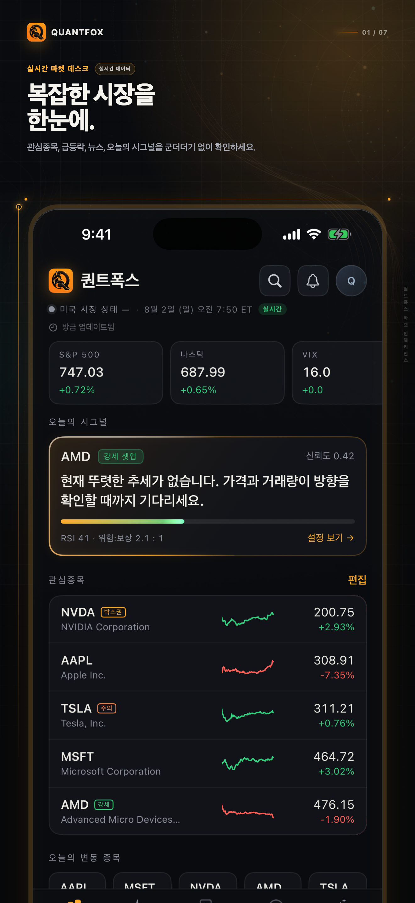
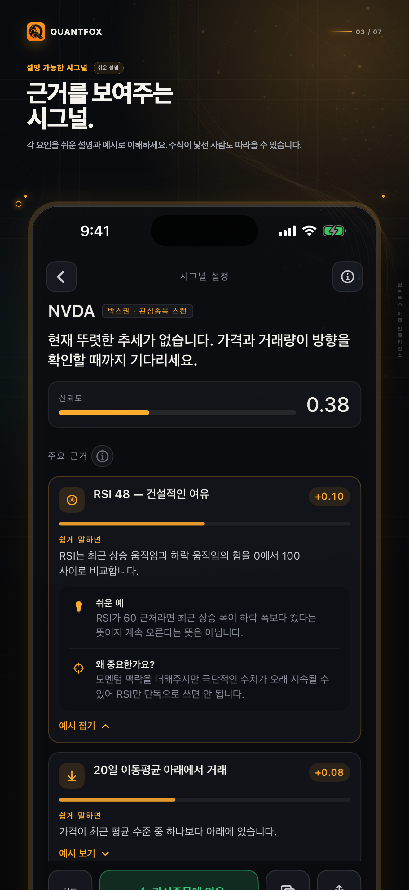
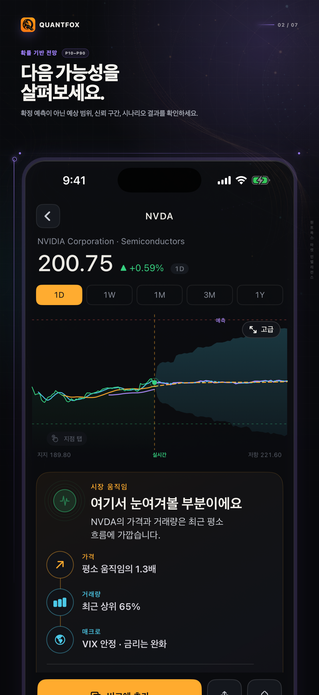
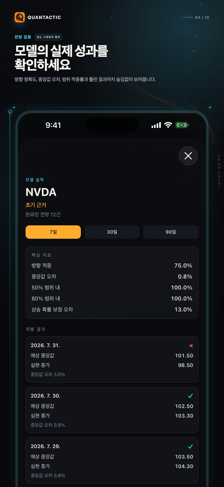

⌁
설명 가능한 시그널
추세, 요인 기여, 리스크 맥락, 무효화 조건과 시그널 변화를 확인하세요.
퀀트택틱은 시장 활동, 설명 가능한 시그널, 확률 기반 전망, 모델 근거, 비교, 매크로 맥락, 온디바이스 프라이빗 AI를 하나의 집중된 리서치 흐름으로 묶습니다.
iPhone · iOS 26 이상 · 계정 및 증권 계좌 연결 불필요

퀀트택틱은 최근 시장 행동을 종목별 기준선과 비교해 가격, 거래량, 추세, 변동성, 시장 맥락의 의미 있는 변화를 찾습니다.
가격 움직임에 참여도, 추세, 섹터, 시장 전체, 매크로 조건을 연결하며 확인되지 않은 재료를 만들어내지 않습니다.

과거 시장 행동을 바탕으로 7·30·90일 확률 기반 시나리오를 생성합니다. 예상 범위, 중앙값, 상승·하락 경로, 신뢰도와 전망 요인을 확인하세요.

퀀트택틱은 완료된 전망을 저장해 과거 전망과 실제 시장 결과를 비교합니다. 오늘의 예측만 보여주지 않습니다.
맞은 결과와 빗나간 결과를 모두 기록합니다.

근거를 가까이 두고, 설명 가능하고, 다음에 무엇을 살펴볼지 판단할 수 있게 합니다.
추세, 요인 기여, 리스크 맥락, 무효화 조건과 시그널 변화를 확인하세요.
주식과 ETF를 같은 출발점에서 비교해 단절된 수익률만 보지 않습니다.
금리, 변동성, 달러, 원유, 경제 발표와 시장 국면을 한곳에 둡니다.
지원 기기에서는 제3자 클라우드 AI 없이 Apple Intelligence로 설명과 리서치를 도울 수 있습니다.
퀀트택틱 Pro는 7일 전망 무제한, 30·90일 전체 확률 기반 전망, 더 깊은 모델 근거, 확장된 프라이빗 AI, 높은 리서치 한도와 광고 없는 경험을 제공합니다.
7일 전망 무제한과 30·90일 시나리오, 확률 범위, 더 깊은 모델 상세를 제공합니다.
완료된 전망, 과거 정확도, 중앙값 오차, 범위 커버리지와 시간에 따른 행동을 검토합니다.
요인, 리스크 맥락, 무효화 조건과 시그널 변화를 확인합니다.
확장된 프라이빗 AI를 사용하고 더 많은 자산을 비교하며 전면 광고를 제거합니다.